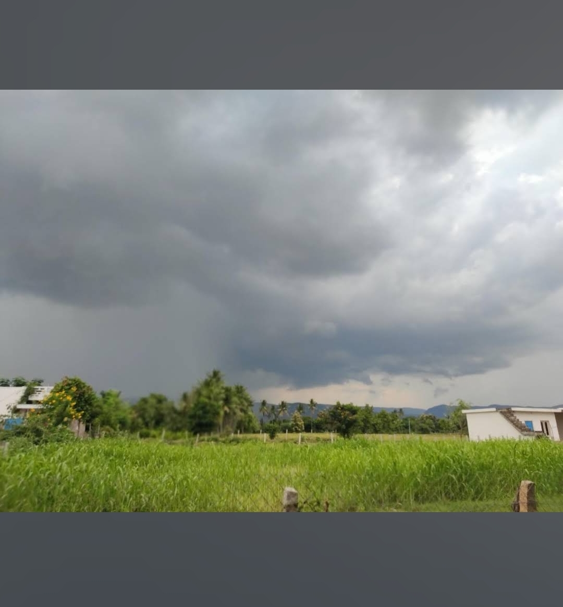
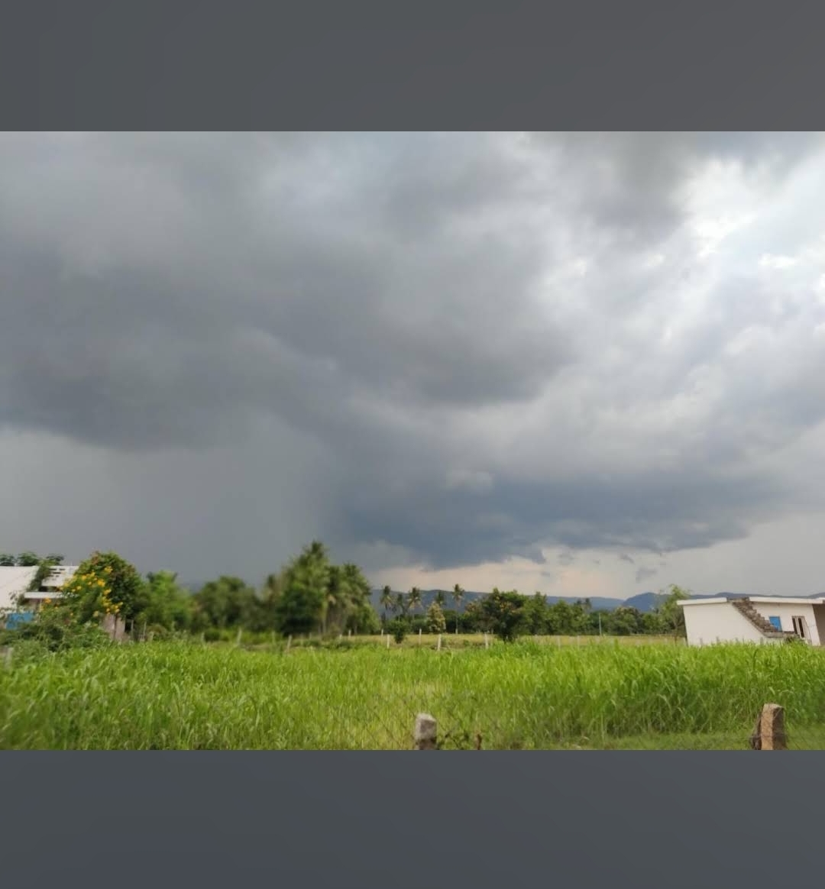

ABOUT MY VILLAGE
Kuppayapalem is a small village located in the Prakasam district of Andhra Pradesh, India. It is known for its serene environment, lush green fields, and friendly community. The village is primarily agricultural, with many residents engaged in farming and related activities. Kuppayapalem boasts a rich cultural heritage, with traditional festivals and rituals celebrated with great enthusiasm. The village also has basic amenities such as schools, a health center, and local markets that cater to the daily needs of its inhabitants. Overall, Kuppayapalem offers a peaceful rural lifestyle away from the hustle and bustle of city life.
Though detailed written records of Kuppayapalem’s origin are limited, it shares the larger history of the Dakkili region — once under localized rural administrations, evolving through the British era and then independent India’s Panchayati Raj system. Over time the village economy moved from purely subsistence farming towards more organized cultivation and small scale trade, aided by nearby towns and road links. The shifting administrative boundaries (from Nellore district to Tirupati) reflect changing governance structures in the region.
MY VILLAGE CULTURE
Life in Kuppayapalem is steeped in tradition, agricultural rhythm and communal values. The majority of residents cultivate crops such as paddy, groundnut and pulses, while seasonal festivals draw together families across the village. Festivals like Sankranti, Ugadi and Deepavali are likely celebrated with traditional feasts, folk songs, simple games and social gatherings. The local language is Telugu, and oral traditions, family-networks, village temple rituals and harvest celebrations form the cultural backbone. The village likely features modest temples, community ponds and gathering spaces where people meet, work together and share local news. Younger generations blend village heritage with modern schooling and small-town opportunities, but the spirit of hospitality, neighbourliness and connection to the land remains strong.
1: The Village Pond
In Kuppayapalem there is a calm water-body—a community pond—that has long been the heart of village gatherings. Farmers pause their work in the fields to refill their water vessels here, children finish school and play by its banks at sunset, and elders sit on the steps sharing stories of old. On bright mornings you’ll see women fetching water and chatting while the birds sing above. In recent years the village panchayat carried out a small repair project (such as the “community water harvesting pond at Nemallagattu pakkana” in the nearby panchayat) which reminds the villagers how vital such ponds are. nregastrep.nic.in +1 Over time, the pond has been more than just water: it’s become a symbol of unity—when harvests are good, the pond reflects the green fields around; when monsoons are weak, the community meets by the pond to discuss what to plant next. You can use an image here of the pond at dawn, local children around it, or a village elder leaning on the rail beside it.
Story 2: Harvest Festival in Kuppayapalem
 


Each year in Kuppayapalem the arrival of harvest season is met with quiet excitement. After months of nurturing paddy, groundnut or pulses, the villagers gather in the shade of a neem tree or under the village temple’s hall for a festive meal. The younger ones help string mango leaves and design kolams in front of homes. Women prepare traditional dishes, and the men pause from field-work to join. The rhythm of life slows for a day — past the routine of work, into one of celebration and thanks. In this festival you’ll often see: Families walking out into the fields at dawn to inspect the crops. A small flag placed at the first cut of the harvest. Music from a simple dholak (hand-drum) as village friends greet one another. Children running around with colourful chalk drawings on the ground. This event is a reminder of how land, people and tradition in Kuppayapalem are intertwined. The crops feed families, yes—but the festival feeds the spirit of the village.
Story 3: The Old Temple and Evening Bells

In the heart of Kuppayapalem stands a small but sacred temple that has watched over generations. Every evening, as the sun dips below the paddy fields, the gentle sound of the temple bell echoes across the village. For elders, it’s a reminder to pause and pray; for children, it’s the call that evening has arrived. Festivals like Sankranti and Vinayaka Chaturthi bring the temple courtyard alive with lamps, laughter, and music. Villagers believe the temple’s blessings protect their crops and homes, keeping harmony in the community.
Story 4: The First Village School
Many years ago, before there were proper roads or buses, Kuppayapalem’s children studied under a large banyan tree. The village elders decided to build a small school with mud walls and tin sheets for a roof. That was the start of formal education here. Today, the same school stands with painted walls and desks, teaching new generations to dream beyond the fields. Some of its students have gone on to become engineers, teachers, and government employees — yet they still return home during holidays to meet their old teachers and share stories of the past.
Story 5: The Neem Tree Gathering


At the center of the village lies a giant neem tree that has stood for decades — some say it’s older than most of the houses. This tree isn’t just shade from the sun; it’s a meeting place, a storyteller, and a silent witness to every change in Kuppayapalem. Farmers rest under it after long hours in the field. Village elders gather there to discuss community matters. During the summer, children swing from its branches or sit doing homework in its cool shadow. The neem tree is truly the “heart” of Kuppayapalem, connecting generations through simple everyday moments.